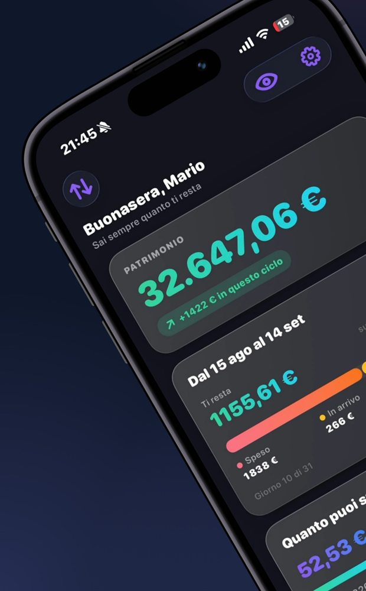

Il tuo mese inizia quando ti pagano
Il tuo mese inizia quando ti pagano
Il mese della banca inizia il primo. Il tuo inizia il giorno in cui ti pagano. MoneyLeft calcola tutto sul tuo ciclo: cosa hai già speso, cosa sta per essere addebitato e quanto ti resta davvero da qui alla prossima paga.
Nessun collegamento al conto in banca. Nessun account obbligatorio.


Tutto quello che serve per non arrivare al 25 del mese chiedendoti dove sono finiti i soldi — senza fogli di calcolo e senza dare a nessuno le chiavi del conto.
Una barra a tre segmenti: quello che hai già speso, quello che sta per essere addebitato e quello che ti resta davvero. Aggiornata a ogni movimento.
Il numero che contaImposti il giorno in cui vieni pagato e l'app smette di ragionare dal primo al trentuno. Budget giornaliero incluso: quanto puoi spendere oggi.
Dal tuo giorno di pagaSi registrano da soli il giorno della scadenza, con il promemoria prima dell'addebito. Se resti indietro, gli arretrati te li propone uno per uno.
Addebito automaticoUn tetto per categoria e gli obiettivi di risparmio, con l'avanzamento sempre visibile. Nessun blocco: ti dice come stai andando, non ti sgrida.
Categoria per categoriaIl patrimonio degli ultimi dodici mesi e la previsione dei prossimi dodici, da scorrere con il dito mese per mese. Con il momento più basso in chiaro.
Indietro e avantiI dati stanno in un file sul dispositivo, protetto dalla cifratura di iOS e da Face ID. Escono solo se attivi tu la sincronizzazione o esporti un backup.
Face ID inclusoPatrimonio in alto, il ciclo in corso al centro, e sotto il diario della settimana. Non devi cercare niente: quello che ti serve sapere è la prima cosa che vedi quando apri l'app.

Importo, categoria, fatto. Le spese si cercano per descrizione o categoria, si filtrano per tipo, e quelle programmate si vedono in arrivo prima ancora che il giorno arrivi.

Ogni conto con la sua icona e il suo colore, e un patrimonio solo che li somma tutti. Puoi escluderne uno dalle analisi senza cancellarlo: resta lì, semplicemente non fa rumore nei calcoli.
Il giorno della scadenza il movimento nasce da solo e il saldo si aggiorna, con un avviso che dice cosa è stato registrato. Una rata finita esce dall'elenco attivo e va fra quelle completate.

La ripartizione per categoria, il confronto con il periodo prima e i segnali letti sul ciclo in corso. Numeri sui tuoi dati, non consigli generici presi da un manuale.

Il patrimonio dei prossimi dodici mesi, calcolato su quanto spendi tipicamente in ciascun mese dell'anno — non su una media piatta. Scorri con il dito e vedi mese per mese quanto ti allontani da oggi.

Il piano gratuito non è una prova a tempo: è l'app, completa, per sempre. Pro aggiunge la lettura dei tuoi numeri nel tempo.
I tuoi dati non finiscono mai dietro un pagamento. L'esportazione e il backup restano gratuiti per sempre, e superare un limite non blocca né cancella quello che hai già creato: impedisce solo di crearne di nuovi finché non passi a Pro. Se l'abbonamento scade, i dati restano intatti.
No, e non si può nemmeno volendo. MoneyLeft non si collega a nessuna banca e non chiede nessuna credenziale bancaria: i movimenti li inserisci tu, o li importi da un file CSV. È una scelta, non un limite tecnico.
No. L'app funziona per intero senza registrazione, e la Guida iniziale non te lo chiede. L'account serve a una cosa sola: ritrovare gli stessi dati su più dispositivi.
Restano sul tuo dispositivo, in un file protetto dalla cifratura di iOS. Lasciano il telefono solo se attivi tu la sincronizzazione, oppure quando esporti un backup dove decidi tu. Non vendiamo dati a nessuno e non c'è nessun tracciamento pubblicitario.
Sì, e resta gratis per sempre anche senza Pro. Trovi l'esportazione e il backup completo in Impostazioni, sotto "I tuoi dati". Il backup si può ripristinare su un altro dispositivo.
Niente ai tuoi dati: restano tutti dove sono. Si disattivano solo le funzioni Pro, inclusa la sincronizzazione automatica. Quello che avevi già creato oltre i limiti del piano gratuito non viene cancellato.
Qualunque iPhone con iOS 17 o successivo. Se cambi telefono ritrovi tutto: con un account accedendo di nuovo, oppure ripristinando un backup esportato.
Sì, ed è il punto di tutta l'app. Imposti il giorno in cui vieni pagato e ogni conto — quanto ti resta, il budget giornaliero, il resoconto del ciclo — viene fatto da quel giorno al successivo, non dal primo del mese.
MoneyLeft ti dice quanto ti resta adesso, e quanto ti resterà fra un mese.
Presto su App Store